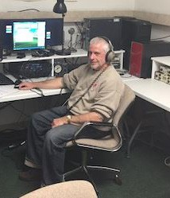
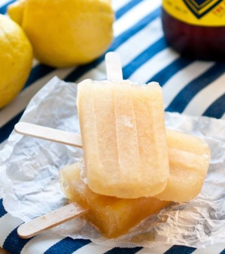

May 2019 TOTR
Newsletter Of The Alford Memorial Radio Club
Safe
ty First
May 2019 Contents
President’s Notes
Meeting Information
Membership News/ Birthdays
Member Spotlight– Rob Bennett, WD4DUI
CW Ops Level 1 Experience– W1MKW
Calendar
Net Numbers
NVIS Propagation
Peach Corner Recipe

May 2019 President’s Notes
Get ready for Field Day! Yes, it’s that fun
I had a conversation with a new ham which I
time of the year again when we get to spend wanted to share:
a full weekend playing radio outdoors with
Him: I’m currently working towards my tech-
friends, eating large amounts of food, and
nician license and I’m trying to do all that I
visiting with those who we haven’t seen
can to prevent from screwing up right off the
since last year. Field day is always the last
bat. So, what are some things I should be
full weekend in June, so we’re looking
aware of after I get my license?
forward to seeing everyone. Bring your
chair, some food, your radio experience,
Me: Listen, listen, listen and learn. But get on
and help the club make a lot of contacts.
the air ASAP. You’ll learn. Will you make
mistakes? Yes, but everyone does when they
On field day, amateur operators strive to
start. Hams tend to be very forgiving, how-
work as many stations as possible on any
ever, you will eventually run into the self-
and all amateur bands (excluding the 60,
appointed ham police, hell-bent on telling
30, 17, and 12-meter bands). They learn to
you that you’re doing everything wrong. Po-
operate in uncontrolled environments and litely sign, and spin the big knob.
in less than optimal conditions. Field day is
open to all amateurs in the areas covered by Him: I can’t find an Elmer.
the ARRL/RAC Field. And organizations
Me: Then find another ham your own level
and countries within IARU Region 2. Even
and experiment together. You’ll still learn
with a technician class license an amateur
more people to bounce ideas off face to face
operator can work HF bands with extra
then just being alone.
class privileges under the club designated
If you hear a new ham on the air. Please
call sign. Non-licensed individuals are also
encourage them and remember you were
welcomed to come and participate in field
once in their shoes.
day, including making radio contacts.
See you at the meeting
Zargon, WB2PSB is our Field Day
Chairperson this year and we welcome him Mike, KK4KHS
to this new position. If you ordered Field
Day Apparel, you can get it from Greg
Mann at the June meeting. Jim, W4RAR,
is cooking BBQ again this year which I’m
really looking forward to. It’s always been
very good.
2

Meeting Information June 13, 2019
7:00pm Annistown Road Baptist Church
Fellowship Hall (back of the building)
Field Day Preparation– Zargon WB2PSB
AMRC Repeaters
146.760– On St. Mtn. approximately 110 ft up the TV
transmission Tower. ECHO LINK available on the 76.
441.8125– on Stone Mountain under the dome.
145.450– Exchange Park
444.250– Exchange Park
224.760– Exchange Park
Repeater Manager Barry Kanne W4TGA
radio.w4tga@gmail.com
HAMS HELPING HAMS
Helping other HAMS get
on the Air since 2017.
Inquire on Groups.io if
you want to help.
3

AMRC MEMBERSHIP Happy May Birthday from
May 1, 2019=132
AMRC
MAY 04 KR4NQ Randy Bassett
Welcome New Members:
MAY 10 WK2Y Bob Gerzoff
Najee Diaab, no call yet
MAY 11 KF4MWI Brian Siegmund
Jon Peters, KN4TKX
Roger Woolery, KK4CRL
MAY 11 KK4HUE Andrea Hestley
Sandy Woolery
MAY 13 KM4RKT Greg Mann
MAY 15 W0SGR Nicholas Blubaugh
Become a member of AMRC or renew by
MAY 15 KM4FQV Larry Bentley
visiting our website http://totr-
MAY 18 KI4OYI Andrew Barnhardt
radio.org/membership/memapp.htm
MAY 18 KM4YOR Richard Jones
Click here.
MAY 20 KP4HF Jerry Vallardares
To Make Changes to your membership
(new address, email, or phone number)
MAY 23 WD4FOX Jon Peters
please email
MAY 23 N4TTY Steve Garrison
Steve Garrison
MAY 23 KJ4CUY Ade Shamblin
Membership Chairman
MAY 23 KI4VDU Doug Papciak
Steve.n4tty@gmail.com
MAY 24 W4TGA Barry Kanne
Update or renew your amateur radio li-
MAY 25 W4EPI Steve Diggs
cense with the FCC at their website for
MAY 25 KA4AUB Max Maxfield
free http://wireless.fcc.gov/uls/
index.htm?job=home. Click Here.
MAY 26 KJ4DCA Jacob Swanson
Update or renew your ARRL
MAY 30 KI4HQD Mike Cooper
membership at their website http://
MAY 30 KJ4NYV Maurice Tanner (SK)
www.arrl.org Click here
Club Dues are Due in January.
Dues help support our repeaters and
club activities. Thank you for promptly
Happy Belated Birthdays
renewing.
April 2019 Page 11.
Steve Garrison
We hope your birthday was
N4TTY
special.
Membership Chair
4

Rob Bennett WD4DUI
AMRC Spotlight Member of the Month
Got my novice call, WD4DUI on April Fools day 1976 or could be 1977.... HMMM Wish I could find my original
ticket..
Started my Electronics hobby and profession at about 12 years old when I built a crystal radio and it took off
from there! Started my pro electronics career working on tube Black & White televisions across the street
from Church Hill Downs. I have yet to go inside to watch the races or for anything else. Sorta looking
like living 10 minutes from the beach and not going ...
Spent 8 years in the Air Force as a Wideband Radio technician & supervisor (AFSC 30470) and worked on ana-
log and digital mux equipment and microwave transmitter/receivers. (TRC-97 mobile microwave radio mux,
TSC-62 Tech Control Facilities , LC-4 & LC8 radios, MR300, GRC-66 (AKA JERK66) Seimens VZ-12, VZ-60 MUX
& EM-400 and TRW channel banks and radios) Stationed at Feldberg Germany for 4 years, it WAS the largest
Autovon switch in Europe. The tower is still there and it is really big and tall and I was not allowed not hang
an HF antenna on it. I was DA1BT while in Germany..Spent a year in Kwang-Ju,, Korea, 4th Combat Comm,.,
507 TACCS at Shaw AFB, Sumpter S.C. and a year flying a desk in Rome, NY Griffiss AFB, CCD (Continetal
Communication Division). Worked as a Fiber Tech for Sprint, the Chief Engineer for a wireless MMDS cable
company in Port Saint Lucie, FL, a few years as a Tech Supervisor and repair facility engineer for PageNet.
(remember pagers?) Also did time as a Production Manager/ Engineer for a Radio Direction Finder
(TechComm) company in Sunrise, FL. Can't wait to get out of South Florida and out of this HOA and get some
real antennas installed. ( We finally made it outta SoFla and now live in lovely Decatur Georgia)
We (Judy and me) now live in Decatur Georgia. Gotta get some antennas in and on the air and mitigate this
damned wideband noise!
Been doing the radio electronics thing for a long time starting with TV repairs and installing CB radios in the
70s(Hung around Radio Shack....alot). Went to Ahrens Trade School in Louisville, KY, Charlie Cave was my
instructor.
Born in 29 Palms CA and moved to Louisville, KY in 1965, Dad was a Marine. Grew up in Louisville and joined
the USAF in 1979 and moved to Florida in 1990, Okeechobbe fist and then Port Sait Lucie and then Boca
Raton and presently living in Decatur, GA
I left lots out, like my fathert's call was K4MXQ, KD4TDA and K4MXQ
again.
Will update more one of these days...Maybe...Guess it really doesn't
matter either way.
Damned the torpedoes! Full speed ahead! (David Farragut)
73
Rob
.
5

CW OPs Level One Experience
Gretchen Mann, W1MKW
Armed with a new MFJ Electronic Keyer Paddle with Memory Model MFJ-422E and a strong “Why” nearby I enrolled in
the CW Ops Level 1 program and began to practice. My grandfather was a ship to shore morse code operator on Cape
Cod and having his call sign, I want to get it back on the CW air. The other why was to be able to do something in radio
my husband has not done first.
I highly recommend the course. I so highly recommend it that I may be taking it over again, good thing I like it. I can
send on demand and I can on good days understand what one is sending. In a class of 5, I am the only YL ,and the only
Southerner. I think I am comic relief as thank y’alls at the end of class cause smirks and laughter from most of the guys.
I will say, for northerners, they sure do have an understanding of southern hospitality. Everyone is kind and patient with
everyone else. Although we are quiet we are cheerleaders for each other.
I tease often that we are the bad news bears of CW and our fearless leader Joe Fischer AA8TA is Coach Buttermaker. I
tease about this to non members of the class and family and friends. Joe has been incredibly kind and patient with all of
us, and I know sometimes he has to be thinking, “Are you in this class?” 8pm on Mondays and Thursdays every week can
make for a long day. When I have put out fires all day, or I have pulled a long shift, sometimes my CW IQ goes down.
Although I am my toughest critic, I have learned a lot from the class, seeing I knew nothing when I started. After less
than 2 months I can on good days decipher small words, letters, and numbers. I am working on instant character recog-
nition. Who knew it is a bad idea to count dits and dahs? And don't write it down….what? Hear it in your head? Don’t
think about it? All these things make me want to count the dits and dahs, think about it, and write it down. I get hung
up when I do this and when I don't, things go better.
While I do not think Joe treats me differently there is a different strategy to coaching girls in skills. If we trust you know
what you are doing and are kind to us, we tend to be loyal and work very hard to achieve and learn. I will miss Joe at the
end of this class. Withdraw has begun to sink in and we still have a couple of weeks. I trust what he says. He is our
biggest fan. He sends our names and calls signs until we hear it and get it, and sometimes this can take awhile. He never
gives up on us, he just suffers though. I will miss everyone so much. I will miss Steve, who always has an interesting
tshirt on. I will miss Marc who is often not there anyway, but comes back to show us up on occasion. I will miss Bob who
is in Africa studying Malaria and really impresses me as CW and dyslexia are tough on one another. I will miss Nicholas,
who always has the answer on the tip of his tongue and has audio trouble when it is time to send. See, we are the Bears.
Mostly, Joe has helped me to love CW, more than what I bargained for.
CW Ops Level one is set up with assigned Homework using the Morse code Trainer website. Then we also play games,
work on instant character recognition, and send things that are interesting to us. My sending was often an NHL update
on the Stanley Cup Finals.
Try CW Ops and let’s
bring some new CW
operators to the AMRC.
Bring yourself, a good
attitude, and be patient
and diligent. This is
what Joe has taught me
the most. I am grateful,
and full of hope.
73, Gretchen W1MKW
6


2019 AMRC Officers and Committee Chairs
Mike Smith KK4KHS
Steve Vogel W4PSV
President
Public Information
smithrm71@yahoo.com
svdec@bellsouth.net
Greg Mann KM4RKT
Vice President/ Apparel Mgr
Steve Garrison N4TTY
km4rkt.greg@gmail.com
Membership
Steve.n4tty@gmail.com
Anthony Acker ND4AA
Secretary
Zargon W4PSB
Field Day Chair
Zack Buersmeyer KN4HKB
Treasurer
Gretchen Mann W1MKW
Totr Newsletter Editor
Gene Blackburn N4UJ
gretchelby@gmail.com
W4BOC Trustee
g.blackburn@ieee.org
Frank Haynes KV4SP
Barry Kanne W4TGA
VE Team Chair
Repeater Manager
barry.kanne@gmail.com
If you would like to serve on a
committee or assist a chair per-
son in their work, contact Mike
Jim Penland N4RAR
KK4KHS. It is a great way to
DeKalb ARES EC/ Counsel
make contacts and learn. Don’t
jwpenland@jwpenland.com
be shy.
7
May 2019 Calendar
Sunday
Monday
Tuesday
Wednesday Thursday
Friday
Saturday
1.
2.
3.
4. Breakfast
7AM Hardees
Turnip
Turck Net
11pm
5
6
7
8
9
10
11
AMRC
Emm Comm AMRC
Breakfast 7am
Sunday
Rag Chew
Monthly
Hardees
Night Net
Meeting
8pm
Turnip
7pm
7pm
Truck Net
11pm
12
13
14
15
1664AMRC 17
18 Breakfast
AMRC
Emm Comm Monthly
7am Hardees
Sunday
Rag Chew
Meeting
Night Net
7pm
8pm
Turnip
7pm
Truck Net
11pm
19
20
21
22
23
24
25 Breakfast
AMRC
Emm Comm
7am Hardees
Sunday
Rag Chew
Turnip
Night Net
Truck Net
8pm
7pm
11pm
26
27
28
29
30
31
AMRC
Emm Comm
Sunday
Rag Chew
Night Net
8pm
7pm
8


AMRC Merchandise
Public Information
Jackets
Agnes Scott Program will
Polo shirts
resume in the Fall. Stay
tuned for information re-
Tshirts
garding programs and open
house events.
Hats
Name tags
Emergency Vests
Contact Greg Mann KM4RKT
km4rkt.greg@gmail.com
Cash, Credit/Debit, Checks
Google Pay, and Apple Pay
Accepted.
Hate the heat, ticks, and bugs at Field
Day? The 2019 AMRC Field Day venue
has changed to an inside venue, the
Stone Mtn Masonic Lodge 840 VFW
Drive Stone Mountain, GA 30086.
Don’t miss the June Totr and June
Meeting for new info.
April 2019 NET NUMBERS
To participate as Net Control for the Sunday Night Net , please go to the
club’s website at https://www.totr-radio.org. Scroll down and Click on the
link to the Net Control sign up sheet or click here. Thanks for your help.
9
NVIS Propagation
When a horizontal dipole is ½-wave high, it has a wide null overhead, and a main
signal radiation pattern shaped like an inverted cone. The reflected wave from the
ground is out of phase with the antenna and so causes partial phase cancellation over-
head. This makes a good “DX” antenna, with gain at relatively low angles, and a wide
skip zone. Problems arise, however, on regional nets and rag chews, because of the
skip zone.
From late evening to early morning, 75 meters may spread out to 1500 miles or
more, as the D-layer disappears and absorption is no longer a factor in path losses. The
typical NVIS antenna pattern shows the signal power at 20 degrees is down 20db, so it
is more likely that 1000-2000 mile contacts are made not by the -20db single-hop ray,
but two or even multiple hops from the much more powerful rays available at the
higher angles.
In the morning, the sun gradually reestablishes D-layer ionization. It starts ab-
sorbing signal power like a giant blanket of attenuation, and its effect increases steadily
(more or less) as the sun gets higher. With the NVIS antenna, the low angles where RF
power is lowest will become useless out at some point, and the practical signal path
distance will draw in to two to three hundred miles radius by mid-to-late morning. This
is because most of the signal power is at high angles, and only the main lobe of the an-
tenna is powerful enough to penetrate the D-layer twice. By late-morning (typically),
signals beyond 150-200 miles usually become very weak, then inaudible. Raising both
antennas substantially (to 125 feet) would provide more power at lower angles and
thus increase the range and/or time available, but this is usually quite impractical. The
practical solution is to switch to 40 meters, where D-layer absorption is much less and
the antenna is twice as high in terms of wavelength.
All of this explains why the reliable, effective path length on 75 meters contracts
and expands with the day-night cycle. A desirable effect of the NVIS vertical lobe is the
reduction of received atmospheric static from distant storms (in the daytime), since
most atmospheric static comes in from angles below about 15 degrees. Narrowing the
vertical beam width of the antenna reduces the noise further. This is accomplished by
lowering the antenna until the best signal-to-noise ratio is achieved.
Another factor to consider is groundwave. If the stations are close enough, the ground-
wave and skywave will mix in the receiver, and cause multipath distortion, due to the
considerable difference in path lengths. For example, for stations 10 miles apart, the
groundwave will travel 10 miles, but the skywave will travel 200-300 miles.
For emergency groups such as ARES, NVIS is the tactical communication system
of choice in many areas, any areas without complete repeater coverage, and all situa-
tions where repeater-based systems have failed or might fail. With the mobile and even
portable HF radios, HF, and antennas employing NVIS propagation, should become
10
much more popular and useful for disaster tactical communications.
NVIS-equipped Amateur fixed stations enjoy regional nets and rag-chews without
the annoying skip zone. It is particularly useful to net controllers and emergency prac-
tice groups. All fixed stations should take steps to immediately supplement their an-
tenna farms with at least a dual-band NVIS antenna (described herein).
Antenna and propagation experimentation is FUN! Building and deploying antennas is
as close as many hams get to home brewing. NVIS is as easy as antenna experimenta-
tion can get. The antennas are simple, and are installed very low. Light-gauge wire and
nylon string may be nailed to trees at extension-ladder heights. Dropping a dipole and
making a change to it takes only minutes and may easily be done by one person with-
out the need to obtain helpers or plan a big event.
NVIS antennas are stealthy. HOA property owner’s associations have restricted
the placement of visible antennas and severely stifled Amateurs’ pleasure, emergency
preparedness, experimentation, and innovation. With NVIS, a fine wire may be brought
through the trees, or routed along the top of a privacy fence. The Ham thusly equipped
may never win any low-band DX awards, but will still have ample opportunities for
QSOs and nets within the regional circle provided by an NVIS antenna in the daytime,
in addition to some low-band DX at night, particularly in the winter when the storms
are gone.
By Harold Melton, KV5R
11

Happy Belated Birthdays April
Peach Corner Monthly
2019
Recipe: Lemon Pale Ale
Popsicles
APR 02 Donna Redfern
APR 03 WA4GIM Tom Roderick
APR 05 KS4KY Neil Martin
1/3 cup fresh squeezed lemon juice (about 4
APR 09 AB4QQ Russell Prevost
large lemons)
APR 10 KK4ZII Amy Lovell
1/4 cup sugar
APR 11 KF4VBR Robert Tyler
1 cup pale ale or IPA
APR 11 Sharon Siegmund
Instructions
APR 14 W4HLP Harvey Pearson
APR 16 KJ4NYU Katherine Tanner
1. Mix all ingredients together in a
APR 17 KG4IUM Andrea Wayward
pitcher or measuring cup with a spout,
APR 20 KN4KWQ Scott Keller
stir until sugar has dissolved.
APR 21 KN4KKE Jonathan Lee
2. Pour into popsicle molds and freeze
APR 22 KM4PEH Jon Richardson
for at least 6 hours.
APR 23 W4RSO Hugh Price
Run molds under hot water until the pop-
sicles release.
12


HRO Atlanta, Georgia
6071 Buford Hwy NE,
Law Offices of
Atlanta, GA 30340
Ruth Primm and
Store Hours Mon -Sat
(10am– 5:30pm)
James Penland
770-263-0700 (Phone)
770-263-9548 (Fax)
www.northlakelawfirm.com
atlanta@hamradio.com
Come to breakfast for food &
conversation every
Saturday at 7am at
Hardees located at 5259
Stone Mountain Hwy Stone
Mountain, GA 30087.
Message from the Editor:
Thank you for your patience. My extra time
was spent learning and practicing my CW
skills. Please look for,in the next couple of
weeks, the June Totr. Thank you for your
patience.
Gretchen Mann– 73!
13